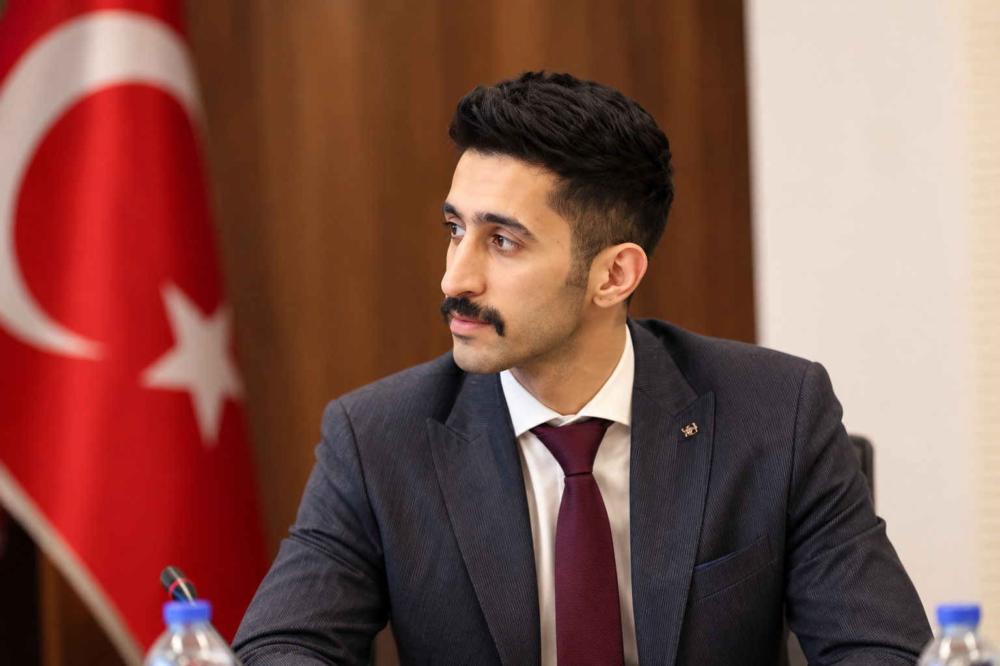
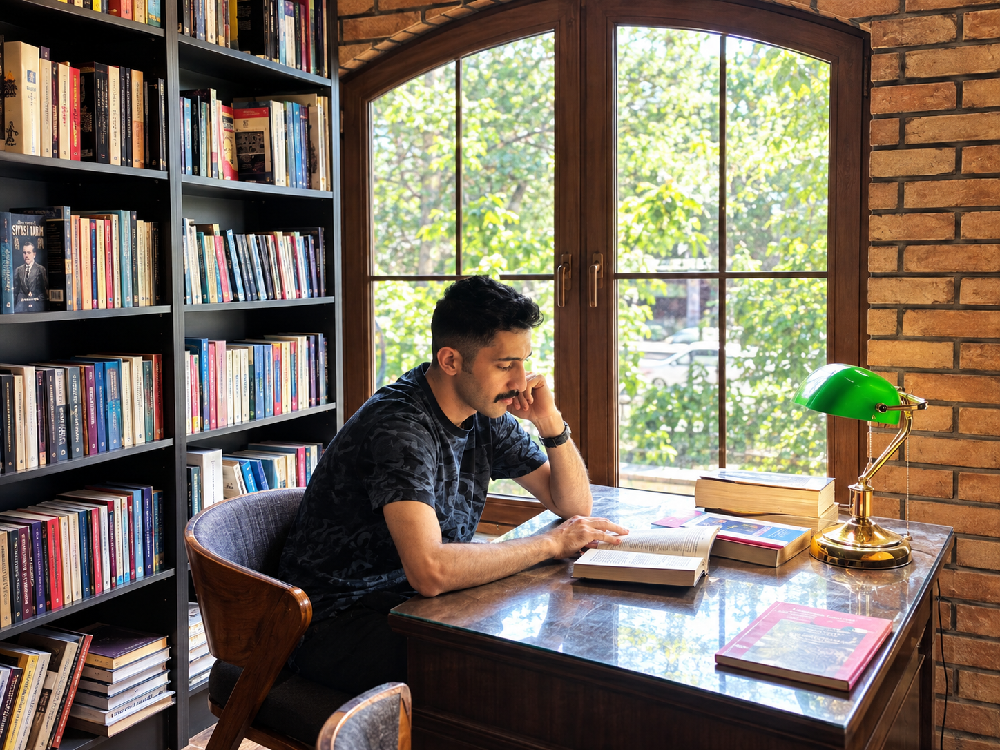
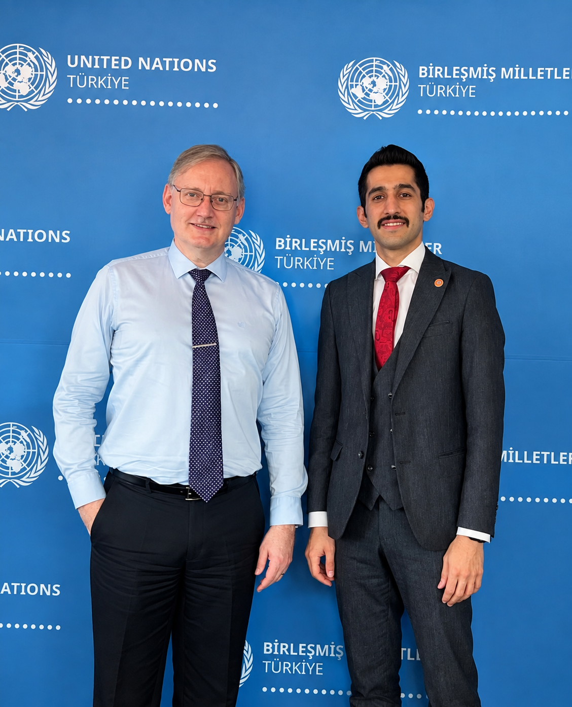
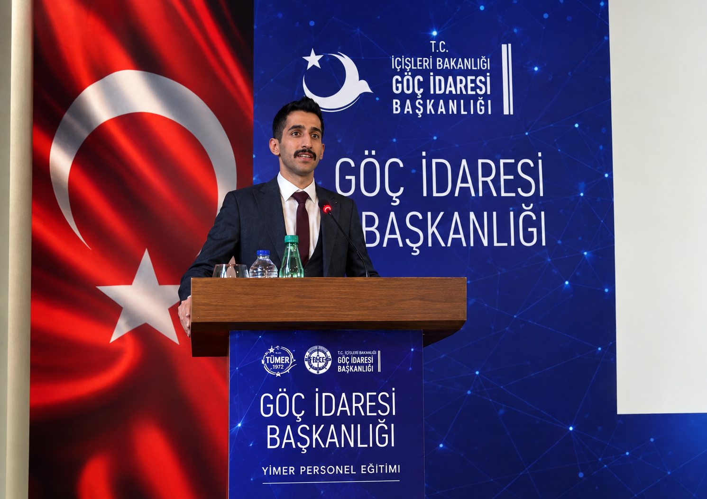
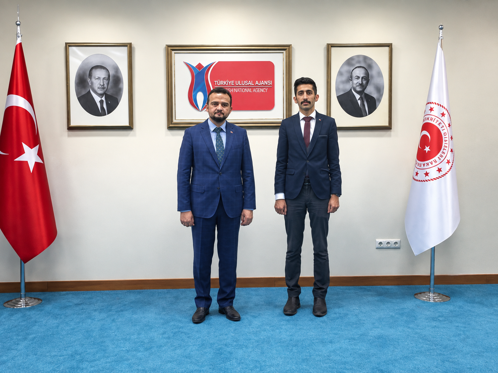
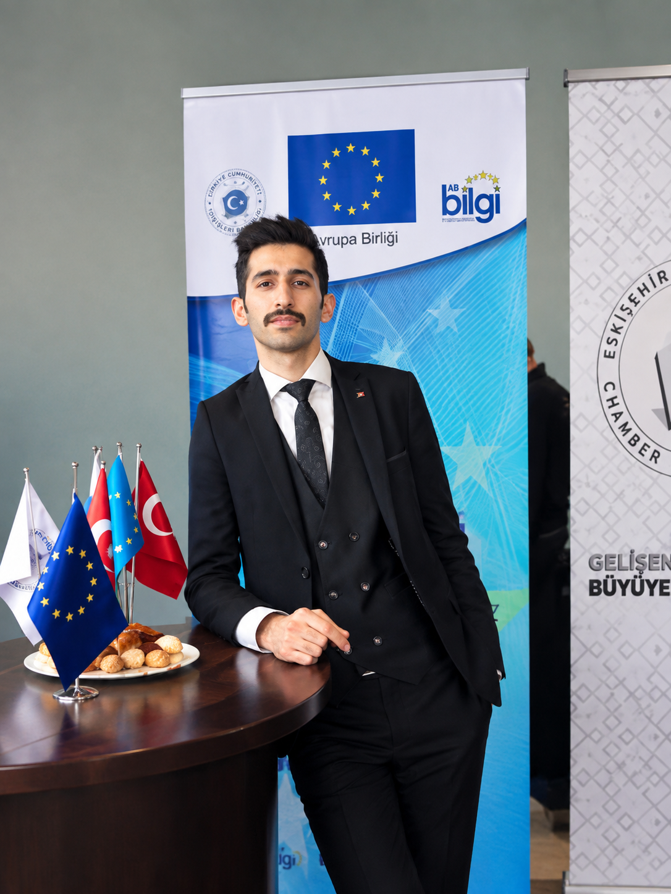
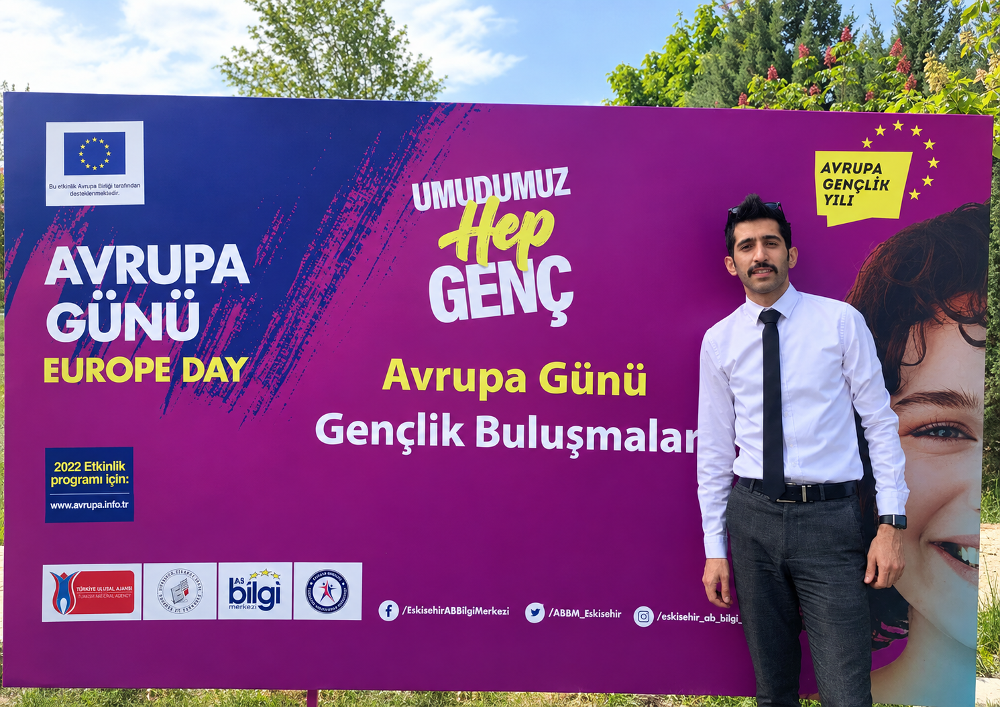
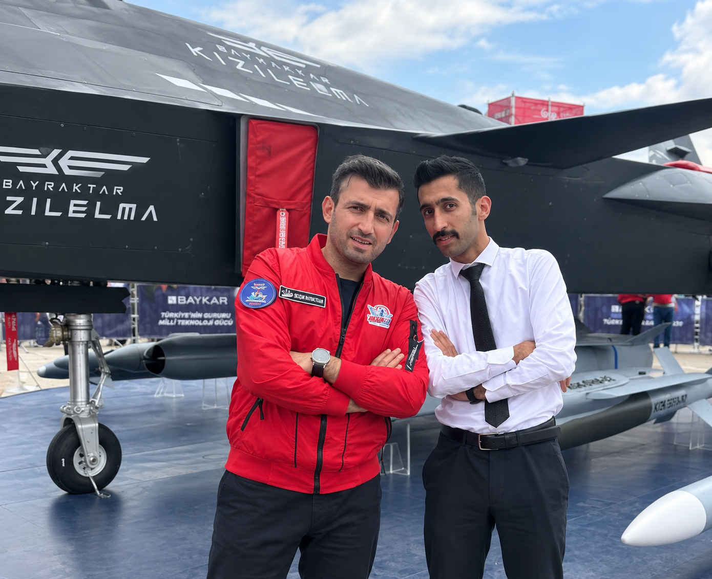

Hukukçu ve BM & AB proje koordinatörü. Uluslararası hukuk, gençlik, uluslararası iş birlikleri, iklim, göç, sosyal uyum, teknoloji ve yapay zekâ alanlarında çalışan proje ve politika odaklı profesyonel.


Çalışmalarımı hukuk, gençlik politikaları, uluslararası projeler ve sürdürülebilirlik perspektiflerinin kesişiminde şekillendiriyorum.
Bir projenin yalnızca fikir aşamasında kalmaması; ihtiyacın doğru analiz edilmesi, hedeflerin somutlaştırılması, uygun finansman mekanizmalarının araştırılması ve uygulama sürecinin ölçülebilir sonuçlarla takip edilmesi gerektiğine inanıyorum.
Bu doğrultuda proje geliştirme, proje koordinasyonu, uygulama, izleme-değerlendirme ve sürdürülebilirlik alanlarında çalışmalar yürütüyorum.
Özellikle Birleşmiş Milletler ve Avrupa Birliği mekanizmaları, uluslararası fonlar, gençlerin karar alma süreçlerine katılımı ve hak temelli yaklaşımlar üzerine çalışıyorum.
Kadın ve çocuk hakları, insan hakları, iklim değişikliği, göç ve sosyal uyumun yanı sıra teknoloji ve yapay zekânın hukuk ve toplum üzerindeki etkileri de çalışma alanlarım arasında.

Birleşmiş Milletler sistemi ve uluslararası mekanizmalar çerçevesinde gençlik, insan hakları, sosyal uyum ve uluslararası iş birlikleri üzerine çalışmalar yürütüyorum.
Uluslararası projelerin yerel ihtiyaçlarla buluşturulması, gençlerin karar alma süreçlerine katılımı ve hak temelli yaklaşımların güçlendirilmesi çalışma alanlarım arasında yer alıyor.
Türkiye'de göç, sosyal uyum, gençlik, proje geliştirme ve uluslararası iş birlikleri alanlarında saha ve koordinasyon çalışmaları yürütüyorum.


Erasmus+, Avrupa fırsatları, gençlik çalışmaları ve uluslararası hareketlilik mekanizmaları üzerine çalışmalar yürütüyorum.
Proje geliştirme, başvuru süreçleri, koordinasyon ve gençlerin uluslararası fırsatlara erişimi konularına odaklanıyorum.

Avrupa Birliği mekanizmaları, proje geliştirme, fon fırsatları, gençlik, iklim ve sosyal uyum alanlarında çalışmalar yürütüyorum.
AB Bilgi Merkezi, Avrupa Komisyonu, Avrupa Birliği Delegasyonu ve gençlik odaklı Avrupa programları çerçevesindeki çalışmalar profesyonel deneyimimin önemli parçaları arasında yer alıyor.

Gençlerin yalnızca projelerin hedef grubu değil, aynı zamanda tasarım ve karar alma süreçlerinin aktif aktörleri olması gerektiğine inanıyorum.
Gençlik çalışmaları kapsamında girişimcilik, inovasyon, eğitim, uluslararası hareketlilik, gönüllülük ve kapasite geliştirme konularına odaklanıyorum.
Kadın hakları, çocuk hakları, sosyal adalet, iklim ve çevre, göç ve sosyal uyum gibi alanları gençlik politikalarıyla birlikte değerlendiriyorum.

Yapay zekâ ve yeni teknolojilerin eğitim, gençlik, kamu politikaları ve çalışma hayatı üzerindeki etkilerini takip ediyorum.
Dijital vatandaşlık, bilgiye erişim, dezenformasyon ve infodemiyle mücadele gibi konular teknoloji çalışmalarımın önemli başlıkları arasında yer alıyor.
Kadının Avrupa Birliği üyelik sürecindeki rolü ve kadın hakları üzerine proje çalışması.
Doğru bilgi, iletişim ve sosyal uyum odağında yürütülen proje çalışmaları.
Sosyal uyum, ortak yaşam ve toplumsal dayanışma eksenindeki çalışmalar.
Gençlerin iklim değişikliği ve sürdürülebilirlik alanındaki katılımını destekleyen çalışmalar.
Türkiye Ulusal Ajansı ve Erasmus+ kapsamında yürütülen proje çalışmaları.
Kültür, uluslararası etkileşim ve adaptasyon eksenindeki proje çalışmaları.
Bilgiye erişim, doğru bilginin yaygınlaştırılması ve sosyal uyum alanındaki çalışmalar.
Gençlik, iklim politikaları ve uluslararası katılım eksenindeki çalışmalar.
Uluslararası Sosyal Eğitim Proje Destek Derneği'nin Yönetim Kurulu Başkanı olarak proje geliştirme, uluslararası iş birlikleri, gençlik ve sosyal etki alanlarında çalışmalar yürütüyorum.
Dernek bünyesindeki çalışmaların proje geliştirme, kapasite geliştirme ve uluslararası iş birlikleri perspektifiyle ilerletilmesine odaklanıyorum.
20 Mayıs 2026 tarihinde Eskişehir Gazete'de yayımlanan yazı.
Yazıyı Görüntüle →